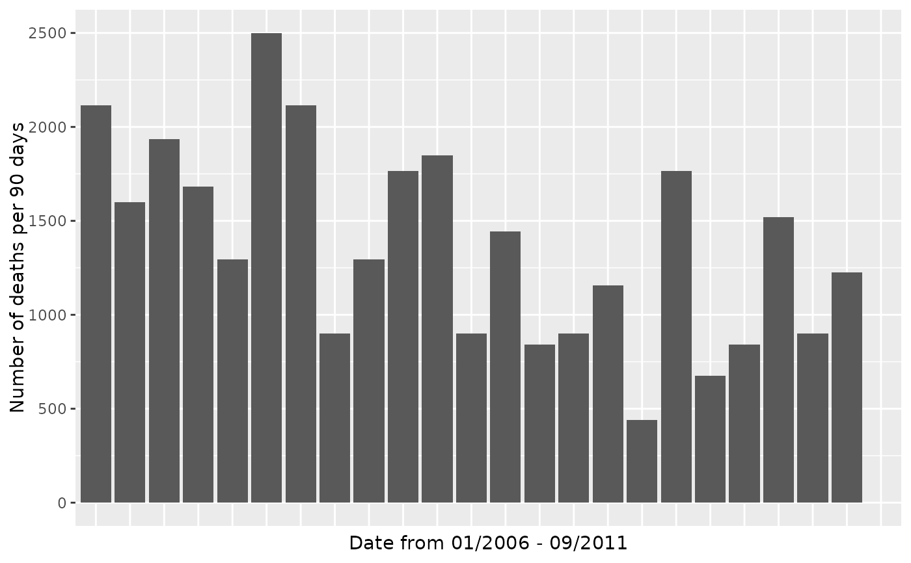

This dataset contains the victim name, age, and location of every murder recorded in the Greater London area by the Metropolitan Police from January 1, 2006 to September 7, 2011.
Format
A data frame with 838 observations on the following 5 variables.
- forename
First name(s) of the victim.
- age
Age of the victim.
- date
Date of the murder (YYYY-MM-DD).
- year
Year of the murder.
- borough
The London borough in which the murder took place. See the Details section for a list of all the boroughs.
Details
To visualize this data set using a map, see the
london_boroughs dataset, which contains the latitude and
longitude of polygons that define the boundaries of the 32 boroughs of
Greater London.
The borough variable covers all 32 boroughs in Greater London:
Barking & Dagenham, Barnet, Bexley, Brent,
Bromley, Camden, Croydon, Ealing,
Enfield, Greenwich, Hackney, Hammersmith &
Fulham, Haringey, Harrow, Havering, Hillingdon,
Hounslow, Islington, Kensington & Chelsea,
Kingston, Lambeth, Lewisham, Merton,
Newham, Redbridge, Richmond, Southwark,
Sutton, Tower Hamlets, Waltham Forest,
Wandsworth, Westminster
References
Inspired by The Guardian Datablog.
Examples
library(dplyr)
library(ggplot2)
library(lubridate)
#>
#> Attaching package: ‘lubridate’
#> The following objects are masked from ‘package:base’:
#>
#> date, intersect, setdiff, union
london_murders %>%
mutate(
day_count = as.numeric(date - ymd("2006-01-01")),
date_cut = cut(day_count, seq(0, 2160, 90))
) %>%
group_by(date_cut) %>%
add_tally() %>%
ggplot(aes(x = date_cut, y = n)) +
geom_col() +
theme(axis.text.x = element_blank(), axis.ticks.x = element_blank()) +
labs(x = "Date from 01/2006 - 09/2011", y = "Number of deaths per 90 days")
